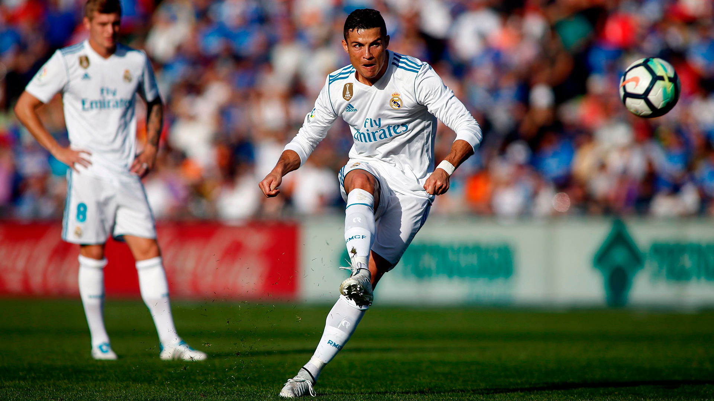

Throughout the many years this tournament has been held, there has been players and teams that have come and gone, with some being remembered as legends. Cristiano Ronaldo holds the record for the most goals scored with 141 goals, while longtime rival, Lionel Messi, is at 2nd place with 125 goals. As far as games played, there is one man that dominates this category as well, which is Cristiano Ronaldo. Ronaldo has played 178 matches, meanwhile his old teammate, Iker Casillas, sits at 2nd place with 177 matches played and he is also the record-holder for most clean sheets with 57.
